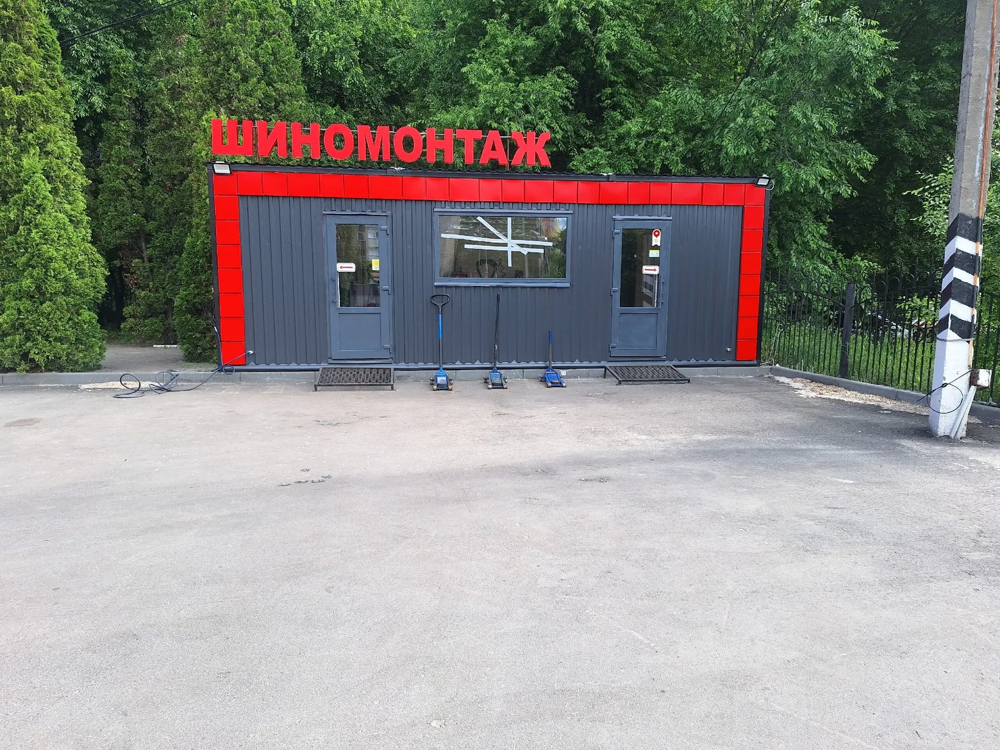
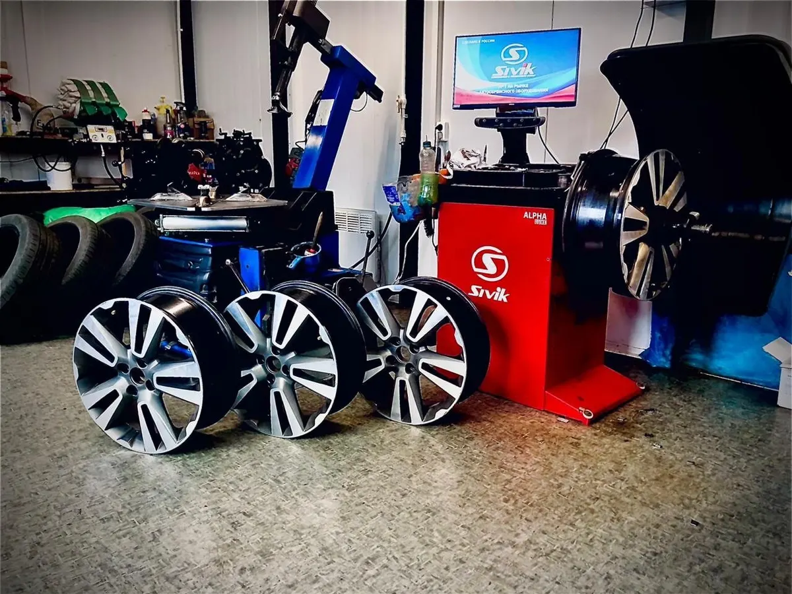
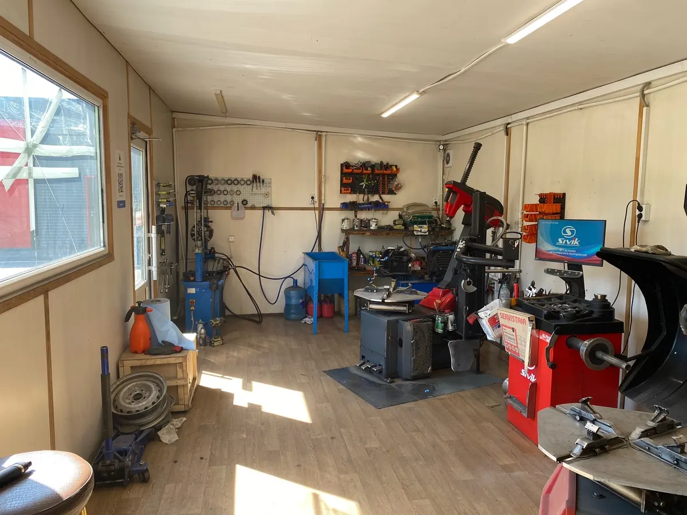
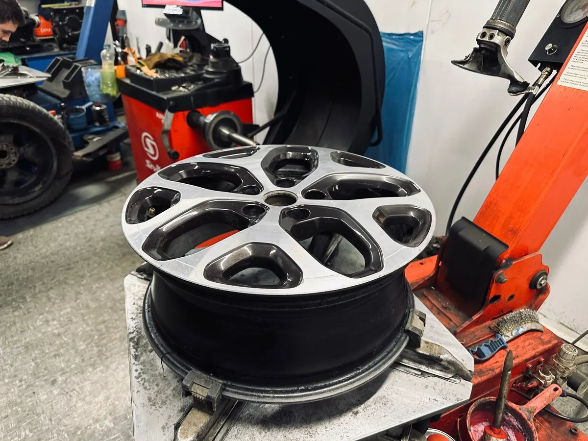

Шиномонтаж · Воронеж
Шиномонтаж и диагностика в Воронеже – сразу и по честной цене
Артём и Дмитрий найдут причину и назовут цену до работ. Без лишних вопросов и накруток. 9 Января, 104/1.

- Ежедневно 09:00–22:00, на АЗС ВТК
- Рейтинг 5,0 · 53 отзыва на Яндекс.Картах
- Мастера Артём и Дмитрий – их благодарят в отзывах
Услуги и цены
Прайс из карточки на Картах – обновлённый лист подставим за минуту.
Ремонт и правка
- Ремонт боковых порезов и шишек (грыж)1 300 ₽
- Правка литых дисков1 000 ₽
- Дошиповка зимних шин20 ₽
Цены из карточки на Яндекс.Картах. Полный прайс на переобувку в карточке не указан – владелец диктует за минуту.
Как проходит
- 01
Позвонили и договорились о времени
+7 (993) 728-33-78, ежедневно с 09:00 до 22:00.
- 02
Приехали – бокс на АЗС ВТК
9 Января, 104/1, заезжать удобно.
- 03
Мастер нашёл проблему и назвал цену
В отзывах это называют «не дурят».
- 04
Забрали машину и чек
Сумма та, что назвали до работы.



Что обещаем
Выручим даже в плотный график
«Всегда помогут найти место и решить проблему» – отзыв на Картах.
Цену называем до работы
«По цене очень приятно, не дурят» – отзыв на Картах.
Найдём проблему, а не придумаем
«Тут точно найдут проблему и помогут» – отзыв на Картах.
Отзывы с Яндекс.Карт
«Всегда выручают, обращаюсь не первый раз. Даже если у них плотный график, всегда помогут найти место и решить проблему.»
олька м. · 14 марта 2025
«По цене очень приятно, не дурят, сейчас таких мастеров мало. Тут точно найдут проблему и помогут!»
Надежда Асеева · 29 сентября
«Оперативно нашли проблему снижения давления в шине. Цены очень адекватные, мастера грамотные.»
Юлия Ш. · 6 июля
Отзывы с карточки на Яндекс.Картах, без правок.
Контакты
- Адрес
- улица 9 Января, 104/1 (АЗС ВТК), Воронеж
- Часы
- Ежедневно 09:00–22:00
- Телефон
- +7 (993) 728-33-78